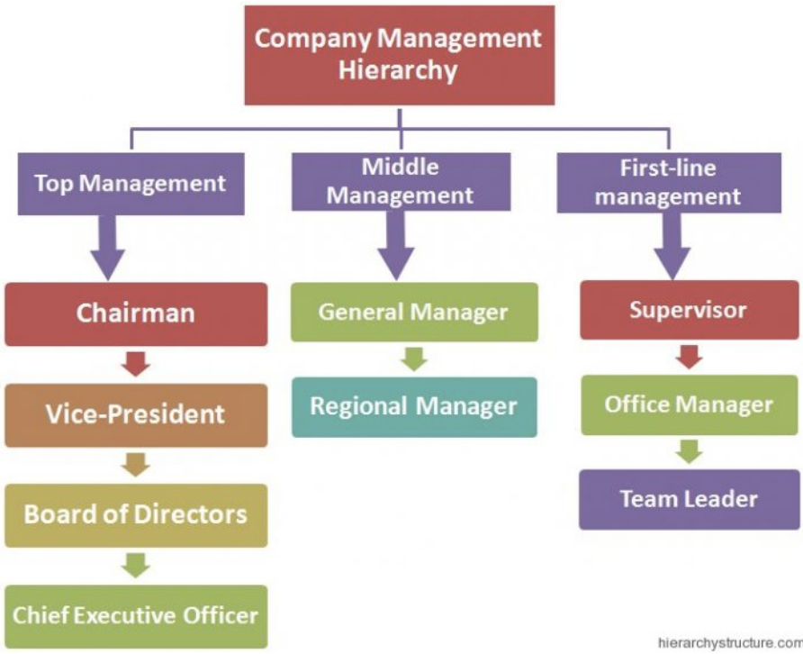
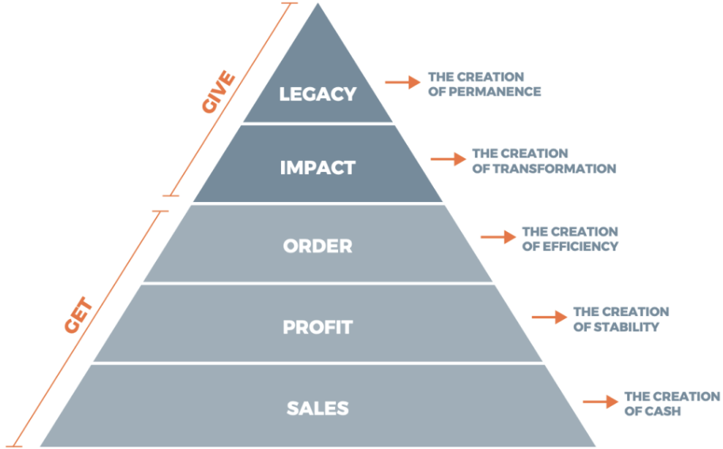

For-profit businesses operate with one goal in mind, to generate profit, that is an increase in money than what the business spent trying to procure that money in the first place (“Two Basic Types of Organizations”, 2022). For-profit business owners decide how money is then divided amongst themselves, the business operations and other employees (“Two Basic Types of Organizations”, 2022). For-profit businesses tend to institute organization hierarchies to establish instruction within their companies, leading to clear objectives and a productive work environment so as to guarantee high profitability.
While organizational hierarchies vary depending on the size of the company, every company institutes some type of hierarchy to ensure that productivity and securing profit is successful, which when looking at for-profit businesses, that is their main priority (Lazzari, 2018). Levels within organizational hierarchies allow businesses to strengthen operations, identify decision makers and subsequently have those decision makers relay information and initiatives throughout the rest of the hierarchy (Lazzari, 2018). Hierarchies instituted in companies ensure that business roles are defined and that objectives are shared throughout the company and eventually reached based on a timeline (Lazzari, 2018). By businesses instituting employee delegations and positions with more or less power, employees will be more driven to deliver exceptional work and drive the company in a positive direction in hopes of one day getting a promotion. Organizational hierarchies allow higher level employees or departments to instruct lower level employees and departments on various matters in order to ensure efficiency.
Generally, hierarchies vary from company to company in terms of individuals securing various roles (Lazzari, 2018). However, there are always top-tier workers, mid-tier workers and low-tier workers. For example, a small business might have one boss/CEO and President with a few employees beneath him/her (Lazzari, 2018). Or alternatively, a mega corporation would have a board and shareholders who control CEO decisions and subsequently the department heads and other employees below (Lazzari, 2018). In most for-profit businesses, the organizational hierarchy consists of shareholders as the primary and most powerful individuals, board and advisors come secondary, then COO/CEO, President and Vice-President, then Department Heads, after that there are Supervisors, Managers and Team Leaders and lastly other Employees (Lazzari, 2018).
To reiterate, organizational hierarchies differ in terms of who makes up the hierarchy depending on the size of the company (Lazzari, 2018). These hierarchies within for-profit businesses ensure that delegations for work-related matters are clear and manageable, they ensure high productivity and they make it possible for employees to move up and thrive in the chain of command (Lazzari, 2018). The defined structure or organizational hierarchies promote clear lines of authority, clear employee roles and responsibilities, accountability for one’s actions, loyalty towards a company, the idea that employees should always strive to do better and hopefully achieve a new position of authority within that company one day.
Company Management Hierarchy. Hierarchy Structure.
https://www.hierarchystructure.com/company-management-hierarchy/
Faust, A. (2020, May 3). Are you considering your business's hierarchy of needs?
https://www.linkedin.com/pulse/you-considering-your-businesss-hierarchy-needs-alex-faust/
Lazzari, Z. (2018, August 21). Levels of Hierarchy in Business.
https://smallbusiness.chron.com/levels-hierarchy-business-22635.html
Two Basic Types of Organizations: For-Profit (Business) and Nonprofit. Free
Management Library. (2022, January 18).
https://managementhelp.org/organizations/types.htm